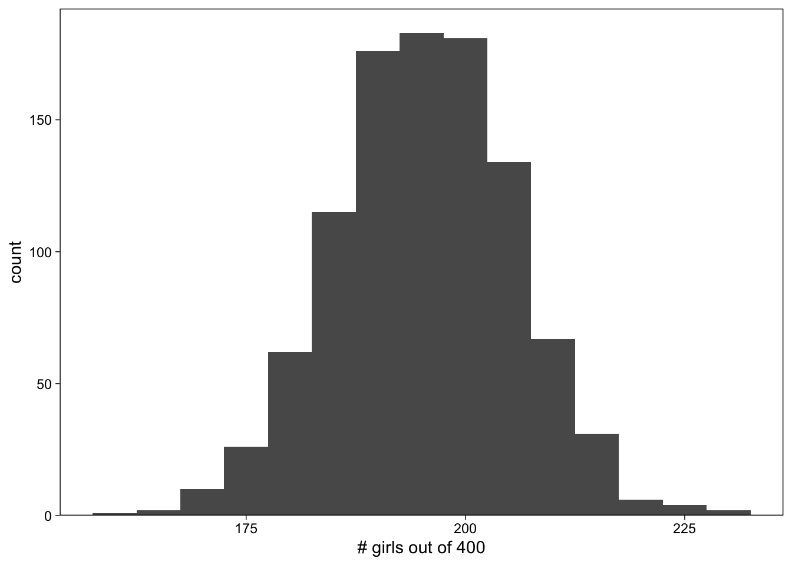

set.seed(5)
# use set seed here because we want to get the same results every time we run the code
rbinom(n = 1, size = 400, prob = 0.488)[1] 188In this book Regression and Other Stories and in practice Gelman et all. use simulation for different reasons:
- use probability models to mimic variation in the world (tools of simulation can help us better to understand how this variation plays out);
- use simulation to approximate the sampling distribution of data and propagate this to the sampling distribution of statistical estimates and procedures;
- regression models are not deterministic; they produce probabilisitc predictions. Simulation is the most convenient and general way to represent uncertainties in forecasts.
Because of this, chapter 5 introduces simulations (basic ideas and tools to perform it in R).
Different examples are given of simulations of discrete, continuous, and mixed discrete/ continuous models are presented.
Here is an discrete model example: Across the world the probability a baby will be born a girl is about \(48.8\%\), with the probability of a boy then being about \(51.2\%\). If you wanted to get a sense of how many girls you’d expect out of 400 births, you could simulate using the rbinom() function.
set.seed(5)
# use set seed here because we want to get the same results every time we run the code
rbinom(n = 1, size = 400, prob = 0.488)[1] 188Graph results of 1000 simulations:
library(tidyverse)── Attaching core tidyverse packages ──────────────────────── tidyverse 2.0.0 ──
✔ dplyr 1.1.3 ✔ readr 2.1.4
✔ forcats 1.0.0 ✔ stringr 1.5.0
✔ ggplot2 3.4.4 ✔ tibble 3.2.1
✔ lubridate 1.9.3 ✔ tidyr 1.3.0
✔ purrr 1.0.2
── Conflicts ────────────────────────────────────────── tidyverse_conflicts() ──
✖ dplyr::filter() masks stats::filter()
✖ dplyr::lag() masks stats::lag()
ℹ Use the conflicted package (<http://conflicted.r-lib.org/>) to force all conflicts to become errors# this is from Solomon Kurz's book, he avoids working with loops
set.seed(5)
# set the global plotting theme
theme_set(theme_linedraw() +
theme(panel.grid = element_blank()))
# set the seed
set.seed(5)
# simulate
tibble(girls = rbinom(n = 1000, size = 400, prob = .488)) %>%
# plot
ggplot(aes(x = girls)) +
geom_histogram(binwidth = 5) +
scale_x_continuous("# girls out of 400", breaks = 7:9 * 25) +
scale_y_continuous(expand = expansion(mult = c(0, 0.05)))
There are many settings where it makes sense to use a set of simulation draws to summarize a distribution, which can represent a simulation from a probability model, a prediction for a future outcome from a fitted regression, or uncertainty about parameters in a fitted model.
Here the tidyverse oriented flow, as Kurz defined it.
set.seed(5)
tibble(z = rnorm(1e4, mean = 5, sd = 2)) %>%
summarise(mean = mean(z),
median = median(z),
sd = sd(z),
mad_sd = mad(z))# A tibble: 1 × 4
mean median sd mad_sd
<dbl> <dbl> <dbl> <dbl>
1 5.00 4.99 2.02 2.03In this book they use the Bayesian simulation approach for regression models. Bootstrap is also a simulation approach, but it is not as general as Bayesian simulation. It is very general, any estimate can be simulated, and it is easy to use with complex models. But it has limitations (for example leading to an answer with an inappropriately high level of certainty). This method is not used in the book.